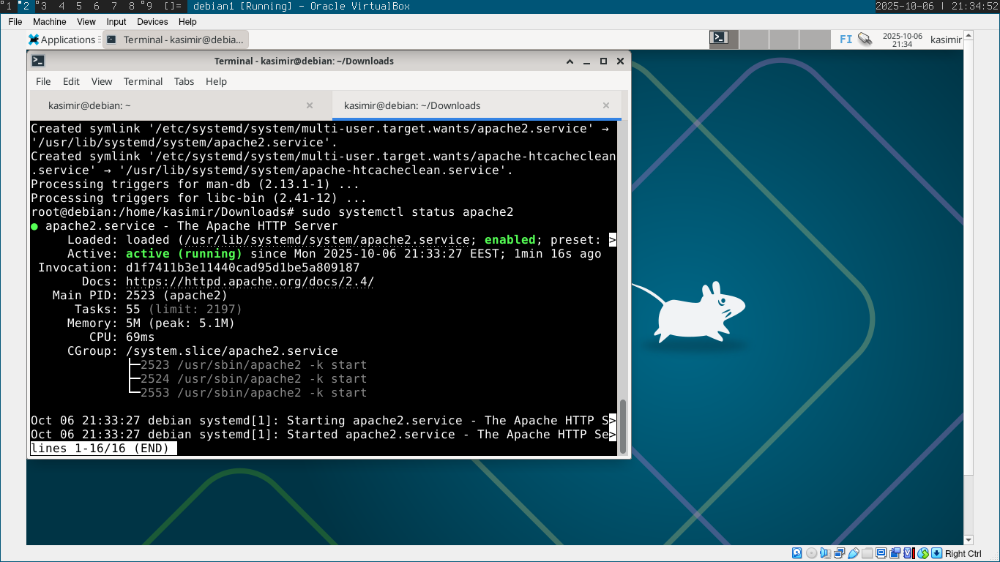
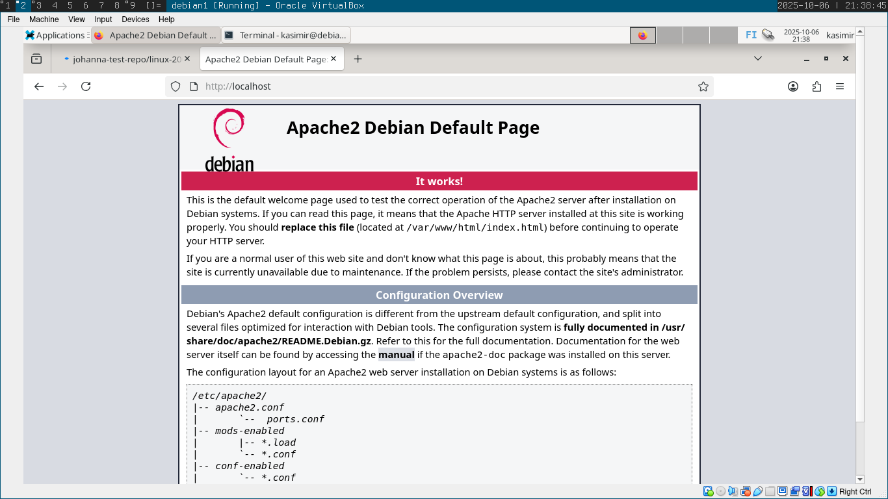
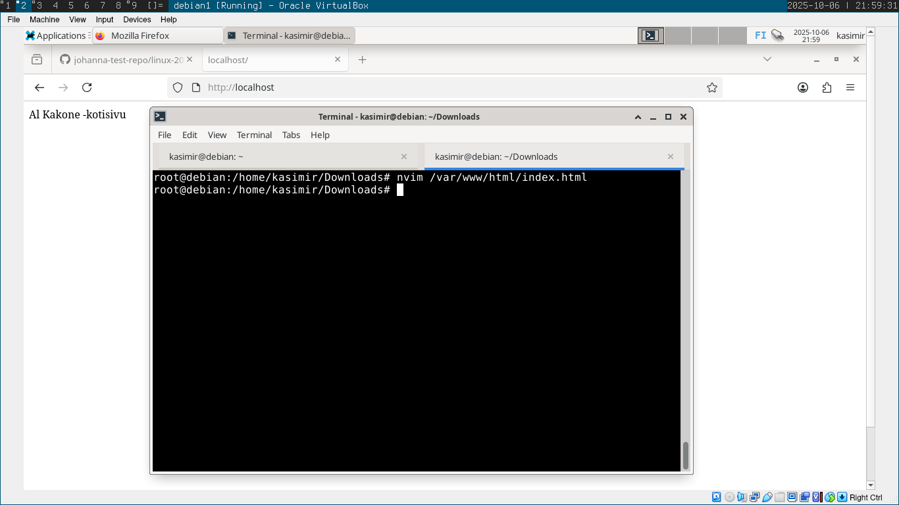
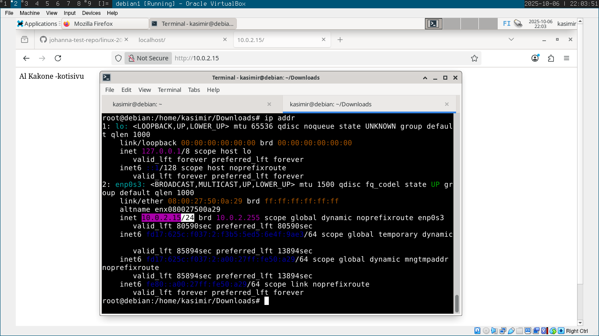

Kirjoitin Hello World -ohjelman kolmella kielellä käyttäen apunani internetin lähteitä (Lähteet sivun lopussa).
Valintani olivat bash, C++ ja Python.
Loin uudet tiedostot kullekin ohjelmalle neovim-tekstieditorilla.
Bash:
echo "Hello World!"
C++:
int main() {
std::cout << "Hello, C++ World!" << std::endl;
return 0;
}
Compilasin C++ -koodin komennolla:
g++ hello.cpp -o hello
Python:
print("Hello world!")
Testasin että kaikki toimivat: Seuraavaksi loin uuden lyhyen lols-nimisen bash-scriptin joka putkittaa ls-komennon lolcat-nimiseen ohjelmaan:
Seuraavaksi loin uuden lyhyen lols-nimisen bash-scriptin joka putkittaa ls-komennon lolcat-nimiseen ohjelmaan:
ls | lolcat
Annoin oikeudet ajaa ohjelmaa komennolla:
chmod a+x lols
Kopioin scriptin /usr/local/bin -hakemistoon jotta sen voisi ajaa missä tahansa sijainnissa:
sudo cp lols /usr/local/bin/
Lopuksi testasin ajaa lols kotihakemistossani:
lols

Toimi!
Seuraavaksi lähdin laboratoriotehtävän pariin. Olin jo valmiiksi valmistellut tuoreen Debian-virtuaalikoneen. Kello oli 21:07.
Minulle ei ollut täysin varma mitkä osat tehtävänannosta pätivät tässä tilanteessa mutta ajattelin etteivät tietyt esivalmistelut päde tässä tapauksessa.
Aluksi asensin minulle mieluisimman neovim-tekstieditorin helpottaakseni työskentelyäni:
sudo apt-get install neovim
Howdy
Otin tekstieditorin käyttöön:
nvim howdy
Kirjoitin lyhyen scriptin joka printtaa ajan ja käyttäjän nykyisen hakemiston:
date
pwd
Annoin scriptin ajamiseen oikeudet ja kopioin sen /usr/local/bin -hakemistoon:
sudo chmod a+x howdy
sudo cp howdy /usr/local/bin/
Testasin ajaa eri lokaatioissa howdy -komennon sekä omalla että root-käyttäjällä ja se toimi! Kello oli 21:28
Apache
Asensin Apache-webpalvelimen komennolla
sudo apt-get install apache2
Testasin lähtikö apache2 käyntiin komennolla:
sudo systemctl status apache2
Apache2 oli aktiivinen.
Apachen default-sivu tuli myös näkyviin localhostissa:
Minulla oli hieman vaikeuksia ymmärtää mikä olisi paras tapa mahdollistaa apache-sivun muokkaaminen ilman sudoa.
Päätin lopulta tutkittuani yrittää vaihtaa /var/www/html/ -hakemiston omistajaksi oman käyttäjäni:
sudo chown kasimir /var/www/html
Luulin saaneeni toivotun tuloksen ja onnistuneeni muokkaamaan sivustoa ilman sudoa.
Minä olin kuitenkin root -käyttäjällä kun tein tämän, hups!
En siis saanut sivustoa muokattua ilman pääkäyttäjää.
Korjasin kuitenkin asian muuttamalla tiedoston index.html -oikeuksia:
chmod 755 -R /var/www/html
Testasin muokata tiedostoa index.html -tiedostoa uudestaan käyttäjälläni ja se toimi.
Tarkistin virtuaalikoneeni paikallisen IP-osoitteen komennolla ip addr
Sivu tuli myöskin näkyviin testaamalla IP-osoitteella. Kello oli 22:03
SSH
Asensin SSH-palvelimen komennolla:
sudo apt-get install openssh-server
Testasin käynnistyikö palvelu komennolla:
sudo systemctl status ssh
SSH oli aktiivinen. Kello oli 22:25
Tässä vaiheessa aikani ja jaksamiseni tulivat vastaan ja päätin taputella homman tähän.
Lähteet:
LinkkiKarvinen, Tero 2025 Tehtävänanto h7 Linkki
Karvinen, Tero 2024 Final lab for Linux-palvelimet Spring Linkki
Vultr 2024, Python Program to Print Hello world! https://docs.vultr.com/python/examples/print-hello-world
Heinonen, Johanna 2025 Shell Scripting Basics https://github.com/johannaheinonen/johanna-test-repo/blob/main/linux-01102025.md/
Heinonen, Johanna 2025 Apache https://github.com/johannaheinonen/johanna-test-repo/blob/main/linux-03092025.md
Ask Ubuntu -foorumi, https://askubuntu.com/questions/904850/changing-permissions-for-var-www-html?rq=1